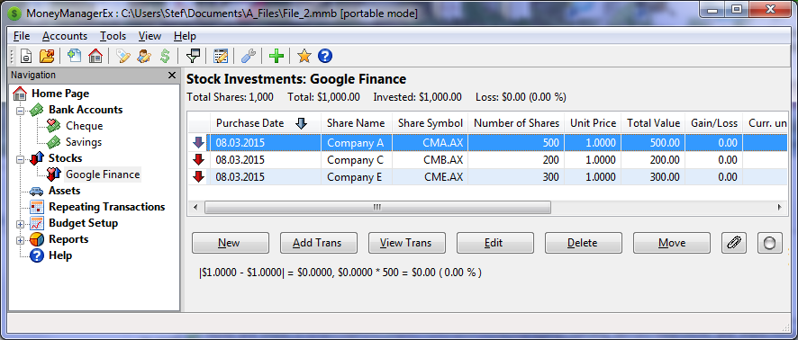
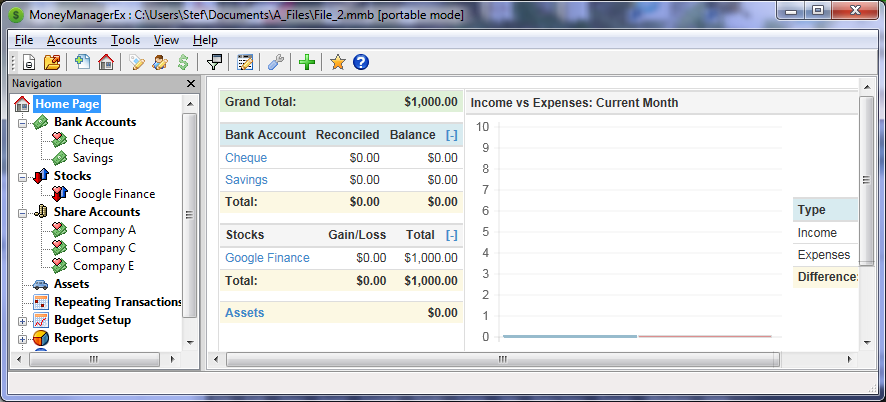
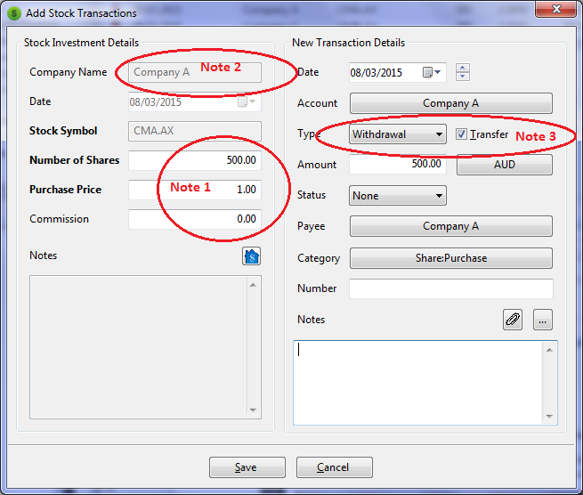

Stock Portfolios or Managed Fund Accounts in MMEX
In order to use Stocks, we need to create an account of type: Investment
This is maintained in the Navigation Tree under the heading: Stocks
Managed Fund Account
For a Managed Fund account this is all we need. Here we can create entries for the companies maintained by the fund and allocate the shares as a percentage of the total shares.
Example: We have a Stock Account with three Companies having a 33% of the total unit allocations. If the total units or Shares are 1000, each company would hold 333.33 units
Stock Portfolio Account
This is where we maintain our own fund and buy shares from the companies we desire. Similar to the Managed fund Account, a Stock Portfolio Account maintains actual companies and shares as whole units. As a result of our Share purchases, we receive dividends which we need to record. The companies we purchase shares from, are generally held at a stock broker site. This now becomes the Stock Account Name.
Example: Companies A, C and E maintain their accounts with Google Finance. We create an investment type account called Google Finance. Within the Google Finance Account, we create entries for Company A having 500 shares, Company C having 200 shares and company E having 300 shares.
|  |
Share Accounts in MMEX
In order to maintain shares where we can buy and sell shares, we need to create an account of type: Shares
A Shares account maintains the transactions for the company in our Stock account. As for all transactions, we also use the company name as a Payee, which we can create. It is also advisable to create categories of Share: Purchase, Share: Dividend, Share: Sale and income: Share Dividend
|  |
Share Accounts
|  |
|
| Subsequent use of this screen allows us to add further transactions such as Dividend payments, More share purchases in the case when we have a Dividend Reinvestment Plan in operation. The DRP allows us to convert dividends to extra shares, without the use of a stock broker. |
Use of Share Accounts |
Note: Future access to the shares accounts may be accessed via the Stocks Account in future. |
Adding Dividends to our Shares.
Using the Add Trans dialog, we are able to add dividend payments to our individual share accounts
Note: The dialog will not display any share information when opened a second time on a share account.
Adding more shares, requires the addition of share information as well as the payee and category information.
Adding Dividends, share information is set to 0 and the type is set to Deposit.
The Transfer checkbox can be unticked for the transaction to become an Income on Deposit.
Examination of the individual Share Accounts will display the transactions for the shares and dividends.